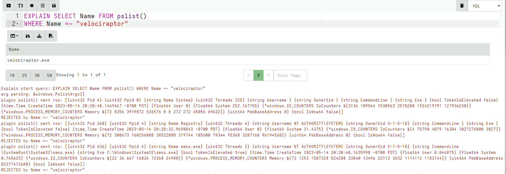
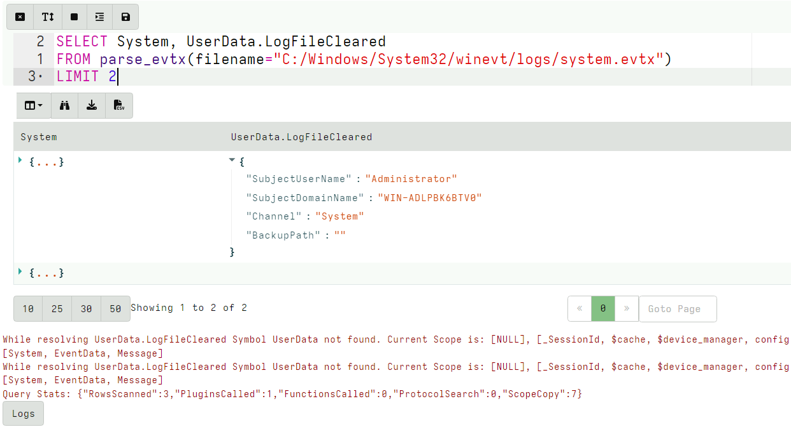
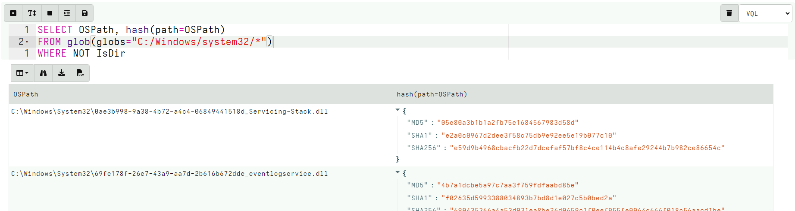
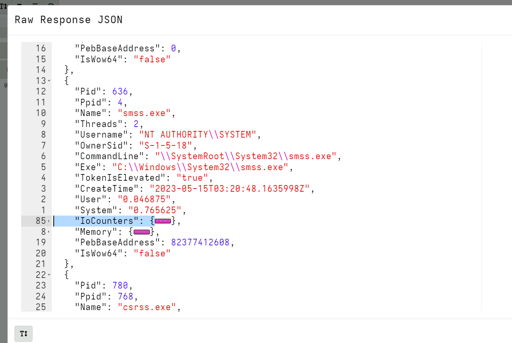
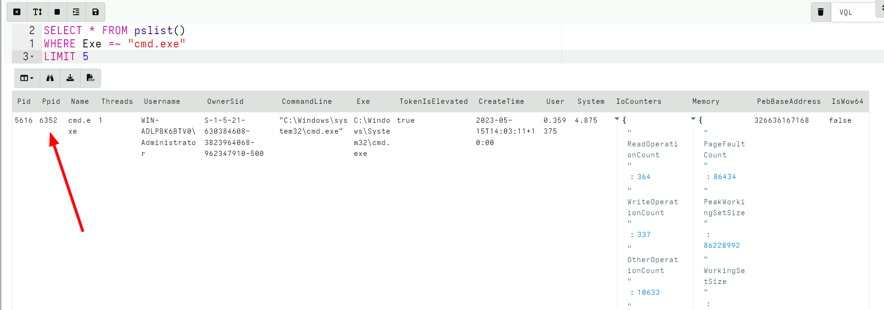
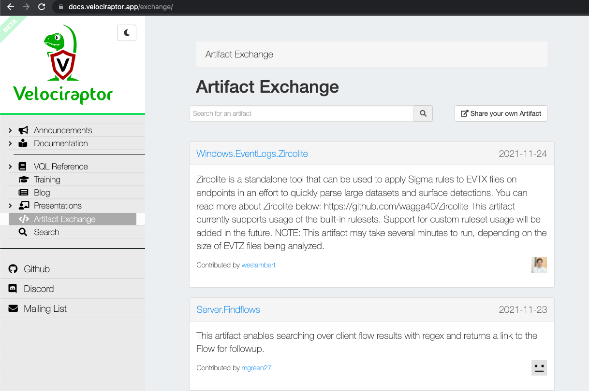
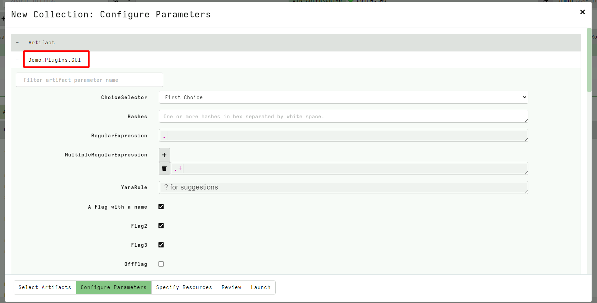
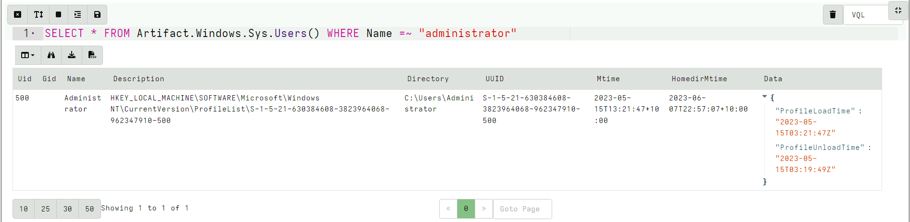
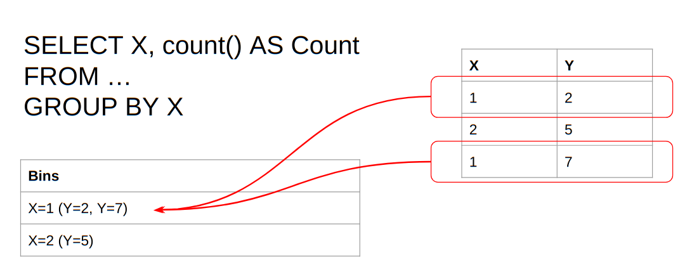

<!-- .slide: class="title" --> # The Velociraptor Query Language ## Harness the power of VQL --- <!-- .slide: class="content small-font" --> ## Module overview * Velociraptor is a VQL evaluation engine * Many features are implemented in terms of VQL so VQL is central! * This module will focus on VQL understanding and demonstrate how it works internally. * This module will use the notebook to evaluate VQL. * Later we can leverage the same VQL across the network at scale!
<!-- .slide: class="content small-font" --> ## Why a query language? * Able to dynamically adapt to changing requirements - without needing to rebuild clients or servers. * For example, a new IOC is released for detection of a specific threat 1. Immediately write a VQL artifact for the threat, upload the artifact and hunt everywhere for it. 2. Turn around from IOC to full hunt: A few minutes. 3. Share artifacts with the community * VQL Artifacts are simply YAML files with VQL queries. 1. Can be easily shared and cross pollinate other Artifacts 2. Can be customized by callers. Public Artifact Reference [here](https://docs.velociraptor.app/artifact_references//) --- <!-- .slide: class="content" --> ## VQL - Velociraptor's magic sauce Rather than having specific analysis modules, VQL allows generic capabilities to be combined in novel creative ways * NTFS/MFT/USN/Glob file system analysis * File parsers - Grok, Sqlite etc * Built in powerful parser framework for novel binary parsers --- <!-- .slide: class="content small-font" --> ## The notebook - an interactive document Notebook consist of cells. Click the cell to see its controls.  --- <!-- .slide: class="content small-font" --> ## Add VQL Cell to a new Notebook * Write the following Query and click Save button. ```sql SELECT * FROM info() ``` * The GUI will autosuggest to help with the query. * VQL queries are just tables with rows and columns. --- <!-- .slide: class="full_screen_diagram small-font" --> ## The notebook - an interactive document VQL cells evaluate the VQL into a table and write any error messages or logs under the table.  --- <!-- .slide: class="content small-font" --> ## Completes plugin names  --- <!-- .slide: class="content small-font" --> ## Suggests plugin args Type ? to show all relevant completions. It also shows documentation for each option.  --- <!-- .slide: class="content" --> ## Create a local server * It is possible to use the notebook to learn and experiment with artifacts. * Create a local server on your windows system. ``` velociraptor.exe gui ``` * We will use this server's notebook feature to learn about windows artifacts --- <!-- .slide: class="content" --> ## What is VQL? ```sql SELECT X, Y, Z FROM plugin(arg=1) WHERE X = 1 ``` * `X, Y, Z` are called Column Selectors * `plugin(arg=1)` is termed a VQL Plugin with Args * `X = 1` is the Filter Condition --- <!-- .slide: class="content small-font" --> ## Plugins * Plugins are generators of rows * Plugins accept keyword arguments * Arguments are strongly typed. * Some arguments are required, some are optional - check the reference to see what is available (VQL will complain!). * Arguments can be other queries (or stored queries) * A row is a map of keys (string) and values (objects) * Values can have many types: * Strings, bytes, int64, float64, dicts, arrays --- <!-- .slide: class="content small-font" --> ## Life of a query ``` SELECT X FROM plugin(arg=1) WHERE X = 1 ``` Evaluation steps: * Evaluate the plugin to produce a *row* * Wrap the row with a lazy evaluator for each column. Place the column in the filter scope. * Evaluate the filter clause, `X = 1`. If it is true the row will be emitted to the result set. * Emit row to result set (JSON): `{“x”: 1}` --- <!-- .slide: class="full_screen_diagram small-font" -->  --- <!-- .slide: class="content small-font" --> ## Explaining a query VQL can explain its operations in detail using the `EXPLAIN` keyword <div style="text-align: center;">  </div> --- <!-- .slide: class="content small-font" --> ## Explaining a query VQL can explain its operations in detail using the `EXPLAIN` keyword  --- <!-- .slide: class="content small-font" --> ## Exercise: List running processes ```sql SELECT * FROM pslist() ``` Narrow processes down to the Velociraptor process ```sql SELECT * FROM pslist() WHERE Name =~ "velociraptor" ``` --- <!-- .slide: class="content small-font" --> ## Inspect the data with the table widget * Show or hide columns * Export the modified table to CSV or JSON  --- <!-- .slide: class="content small-font" --> ## Inspect the data with the table widget * Filter or sort using the table widget  --- <!-- .slide: class="content small-font" --> ## Exercise: Hash notepad.exe Try this query in the notebook ```sql SELECT OSPath, hash(path=OSPath) AS Hash FROM glob(globs="C:/Windows/system32/*") WHERE Name =~ "notepad.exe" ``` Does it feel fast or slow? How about this ```sql SELECT OSPath, hash(path=OSPath) AS Hash FROM glob(globs="C:/Windows/system32/*") WHERE Hash.MD5 =~ "A" AND Name =~ "notepad.exe" ``` --- <!-- .slide: class="content small-font" --> ## Lazy Evaluators Since many VQL functions can be expensive or have side effects it is critical to understand when they will be evaluated (i.e. when they will run). VQL tries to do as little work as possible so it can be efficient. A good function is the log() function which outputs a log when it gets evaluated. We can use this to understand the evaluation order. --- <!-- .slide: class="content small-font" --> ## Exercise: Evalution and Side effects with log() Evaluating the log() function returns true and logs the message in the query log. * Log function is not evaluated for filtered rows * When the Log variable is mentioned in the filter condition, it will be evaluated only if necessary! * We can use this property to control when expensive functions are evaluated * e.g. `hash()`, `upload()` --- <!-- .slide: class="content small-font" --> ## Exercise: Evalution and Side effects with log() In the following queries predict if the log function will be evaluated. ```sql SELECT OS, log(message="I Ran 1!") AS Log FROM info() SELECT OS, log(message="I Ran 2!") AS Log FROM info() WHERE OS =~ "linux" SELECT OS, log(message="I Ran 3!") AS Log FROM info() WHERE Log AND OS =~ "linux" SELECT OS, log(message="I Ran 4!") AS Log FROM info() WHERE OS =~ "linux" AND Log ``` --- <!-- .slide: class="content small-font" --> ## Checking the log function output  --- <!-- .slide: class="content optional small-font" data-background-color="antiquewhite" --> ## What is a Scope? A scope is a bag of names that is used to resolve variables, functions and plugins in the query.  VQL sees “info” as a plugin and looks in the scope to get the real implementation --- <!-- .slide: class="content optional small-font" data-background-color="antiquewhite" --> ## Nested Scopes Scopes can nest - this allows sub-scopes to mask names of parent scopes. VQL will walk the scope stack in reverse to resolve a name.  --- <!-- .slide: class="content optional small-font" data-background-color="antiquewhite" --> ## Scope exercise * When a symbol is not found, Velociraptor will emit a warning and dump the current scope’s nesting level. * Depending on where in the query the lookup failed, you will get different scopes! You can use this to spot typos in the query. * The top level scope is usually populated by artifact parameters. --- <!-- .slide: class="content optional small-font" data-background-color="antiquewhite" --> ## Typo Example ```sql SELECT Hostname, OS, Executabler FROM info() ```  * When the client emits a `Symbol not found` error Velociraptor assumes the VQL is faulty and will fail the collection from the client! --- <!-- .slide: class="content optional small-font" data-background-color="antiquewhite" --> ## Unknown column types * Sometimes we do not know in advance if a certain column exists or not - e.g. parsing event logs.  --- <!-- .slide: class="content optional small-font" data-background-color="antiquewhite" --> ## Unknown column types If we expect that some symbols will not be found, we can suppress the warnings using the following pattern: ```sql LET X = scope() SELECT System, X.UserData.LogFileCleared FROM parse_evtx(filename="C:/Windows/System32/winevt/logs/system.evtx") ``` --- <!-- .slide: class="content small-font" --> ## VQL Syntax * Strings denoted by " or ' (escape special characters) * Multiline raw string is denoted by ''' (three single quotes) * Subquery delimited by {} * Arrays delimited by () or [] * You can use (XXX, ) to keep an array distinct from (XXX) Use `'''` for Windows paths, Regex etc --- <!-- .slide: class="content small-font" --> ## The foreach plugin * VQL does not have a JOIN operator, instead we have the foreach() plugin. * This plugin runs one query (given by the `rows` arg), then for each row emitted, it builds a new scope in which to evaluate another query (given by the `query` arg). --- <!-- .slide: class="content small-font" --> ## The foreach plugin ```sql SELECT * FROM foreach( row={ SELECT Exe FROM pslist(pid=getpid()) }, query={ SELECT ModTime, Size, FullPath FROM stat(filename=Exe) }) ``` * Note how “Exe” is resolved from the produced row since the query is evaluated within the nested scope. --- <!-- .slide: class="content optional small-font" data-background-color="antiquewhite" --> ## Foreach on steroids! * Normally foreach iterates over each row one at a time. * The `foreach()` plugin also takes the workers parameter. If this is larger than 1, foreach() will use multiple threads. * This allows to parallelize the query! --- <!-- .slide: class="content optional small-font" data-background-color="antiquewhite" --> ## Exercise: Hash all files ```sql SELECT OSPath, hash(path=OSPath) FROM glob(globs="C:/Windows/system32/*") WHERE NOT IsDir ```  --- <!-- .slide: class="content optional small-font" data-background-color="antiquewhite" --> ## Faster hashing! Convert the previous query to a multi-threaded query using foreach. --- <!-- .slide: class="content optional" data-background-color="antiquewhite" --> ## Solution <div class="solution solution-closed"> ```sql SELECT * FROM foreach(row={ SELECT OSPath FROM glob(globs="C:/Windows/system32/*") WHERE NOT IsDir }, query={ SELECT OSPath, hash(path=OSPath) FROM scope() }, workers=30) ``` </div> --- <!-- .slide: class="content " --> ## The foreach() column parameter * A row is really a dict consisting of * columns (the dict keys) * cells (the dict values) * Sometimes a query will pass an entire dict in one of the columns. * In that case we want to use that dict as the row instead of the actual row. * Do this by specifying the `column` parameter --- <!-- .slide: class="content" data-visibility="hidden" --> ## Exercise: Filter columns by name * Consider the following CSV file ```csv Column1,Column2,SomethingElse 1,2,3 2,3,4 3,4,5 ``` * Write a query that only shows `Column*` --- <!-- .slide: class="content" data-visibility="hidden" --> ## Filtering columns and dicts ```sql LET CSVFile = ''' Column1,Column2,SomethingElse 1,2,3 2,3,4 3,4,5 ''' LET FilterDict(RowDict) = to_dict(item={ SELECT * FROM items(item=RowDict) WHERE _key =~ "Column" }) LET GetDictForCSVRow = SELECT _value AS RowDict FROM items(item={ SELECT * FROM parse_csv(accessor="data", filename=CSVFile) }) SELECT * FROM foreach(row=GetDictForCSVRow, query={ SELECT * FROM foreach(row={ SELECT FilterDict(RowDict=RowDict) AS RebuildDict FROM scope() }, column="RebuildDict") }) ``` --- <!-- .slide: class="content small-font" --> ## LET expressions * A stored query is a lazy evaluator of a query which we can store in the scope. * Where-ever the stored query is used it will be evaluated on demand. * LET expressions are more readable ```sql LET myprocess = SELECT Exe FROM pslist(pid=getpid()) LET mystat = SELECT ModTime, Size, FullPath FROM stat(filename=Exe) SELECT * FROM foreach(row=myprocess, query=mystat) ``` Note these are 3 different queries sharing the same scope! --- <!-- .slide: class="content small-font" --> ## LET expressions are lazy * Calling pslist() by itself will return all processes. * The foreach query will quit after 5 rows due to the limit clause * This cancels the query as soon as we have enough rows! * Therefore `stat()` will only be run on 5 rows. * Early exit for expensive plugins ```sql LET myprocess = SELECT Exe FROM pslist() LET mystat = SELECT ModTime, Size, FullPath FROM stat(filename=Exe) WHERE log(message="Stat " + Exe) SELECT * FROM foreach(row=myprocess, query=mystat) LIMIT 5 ``` --- <!-- .slide: class="full_screen_diagram small-font" --> ## LET expressions are lazy  --- <!-- .slide: class="content small-font" --> ## Materialized LET expressions Sometimes we do not want a lazy expression! VQL calls a query that is expanded `materialized`. The expanded rows are kept in memory if they are not too many, otherwise they are written to disk. Slow approach: ```sql LET process_lookup = SELECT Pid AS ProcessId, Name FROM pslist() SELECT Laddr, Raddr, Status, Pid, { SELECT Name FROM process_lookup WHERE Pid = ProcessId } AS Process FROM netstat() ``` --- <!-- .slide: class="content small-font" --> ## Materialized LET expressions  --- <!-- .slide: class="content small-font" --> ## Materialized LET expressions Materialize the query with <= operator will put the query into memory. Faster approach: ```sql LET process_lookup <= SELECT Pid AS ProcessId, Name FROM pslist() SELECT Laddr, Raddr, Status, Pid, { SELECT Name FROM process_lookup WHERE Pid = ProcessId } AS Process FROM netstat() ``` --- <!-- .slide: class="content small-font" --> ## Materialized LET expressions  All the rows are expanded into memory once and then looked up from there. --- <!-- .slide: class="content optional small-font" data-background-color="antiquewhite" --> ## Materialized LET expressions We can go faster! `Memoize` means to remember the results of a query in advance Fastest: ```sql LET process_lookup <= memoize(key="Pid", query={ SELECT str(str=Pid) AS Pid, Name FROM pslist() }) SELECT Laddr, Raddr, Status, Pid, get(item= process_lookup, member=str(str=Pid)).Name AS Process FROM netstat() ``` --- <!-- .slide: class="content optional small-font" data-background-color="antiquewhite" --> ## Materialized LET expressions - fastest  --- <!-- .slide: class="content small-font" --> ## Local VQL functions * LET expressions can declare parameters. * This is useful for refactoring functions into their own queries. * The call site still uses named args to populate the scope. ```sql LET MyFunc(X) = 5 + X SELECT MyFunc(X=6) FROM scope() ```  --- <!-- .slide: class="content optional small-font" data-background-color="antiquewhite" --> ## Protocols - VQL operators * VQL syntax is inspired by Python :-) * Objects within VQL are strongly typed but dynamic * Operators interact with objects via “Protocols” * This means that different objects may do different things for different operators - usually they make sense * If a protocol is not found, VQL substitutes a NULL - VQL does not abort the query! --- <!-- .slide: class="content small-font" --> ## Plugin reference * VQL is a glue language * It is quite capable but it is not designed to be able to implement arbitrary algorithms * It relies on VQL plugins and functions to do the heavy lifting while VQL combines high level logic There is a plugin reference on the web site * Distinction between plugin and funcion * Search for plugins * Note required args and their types --- <!-- .slide: class="content small-font" --> ## Plugin reference site  --- <!-- .slide: class="content small-font" --> ## Writing VQL for fun and profit! Learn by example: `wmi shell` * A common attacker technique is to run remote command shell. Try it yourself: ``` wmic process call create cmd.exe ``` Let's write an artifact that detects `cmd.exe` launched from WMI --- <!-- .slide: class="content small-font" --> ## Start small - list processes  See the raw output --- <!-- .slide: class="content small-font" --> ## View raw JSON data The Raw JSON shows us what data is available for further VQL processing.  --- <!-- .slide: class="content small-font" --> ## Refine - Filter by name * The regular expression match operator is `=~` ```sql SELECT * FROM pslist() WHERE Name =~ 'cmd.exe' LIMIT 5 ```  --- <!-- .slide: class="content small-font" --> ## Subquery - find parent process Each process that is shown, we want to show it's parent process. We can apply a subquery on each row. ``` SELECT *, { SELECT * FROM pslist(pid=Ppid) } As Parent FROM pslist() WHERE Name =~ 'cmd.exe' LIMIT 5 ``` --- <!-- .slide: class="content small-font" --> ## Detection: Processes spawned by WMI Applying a `WHERE` clause will filter out all rows that are not interesting, leaving rows that should be acted on for detection. <div class="solution solution-closed"> ``` SELECT Name, Pid, Username, CommandLine, { SELECT Name, Pid FROM pslist(pid=Ppid) } As Parent FROM pslist() WHERE Name =~ 'cmd.exe' AND Parent.Name =~ "Wmi" LIMIT 5 ``` </div> --- <!-- .slide: class="content small-font" --> ## Detection: Processes spawned by WMI  Can you think of limitations with this method? --- <!-- .slide: class="content small-font" --> ## Exercise: Enrich netstat * Show extra information on all listening processes, including: * Binary path on disk * User that launched the process * Linked DLLs * Manufacturer if available * Compile time --- <!-- .slide: class="content small-font" --> ## Step 1: Identify listening processes ```sql SELECT * FROM netstat() WHERE Status =~ "LISTEN" ```  --- <!-- .slide: class="content small-font" --> ## Step 2: Lookup the process from Pid ```sql SELECT *, { SELECT Name, Exe FROM pslist(pid=Pid) } AS Process FROM netstat() WHERE Status =~ "LISTEN" ```  --- <!-- .slide: class="content small-font" --> ## Step 3: Lookup binary information ```sql SELECT *, { SELECT Name, Exe, parse_pe(file=Exe) AS peinfo FROM pslist(pid=Pid) } AS Process FROM netstat() WHERE Status =~ "LISTEN" ``` --- <!-- .slide: class="content small-font" --> ## Step 3: Lookup binary information  --- <!-- .slide: class="content small-font" --> ## Complete solution <div class="solution solution-closed"> ``` LET X = SELECT *, { SELECT Name, Exe, Username, parse_pe(file=Exe) AS peinfo FROM pslist(pid=Pid) } AS Process FROM netstat() WHERE Status =~ "LISTEN" LIMIT 10 SELECT Process.Username, Process.Name, Process.Exe, Process.peinfo.VersionInformation.ProductName, format(format='%v:%v', args=[Laddr.IP, Laddr.Port]) AS Laddr FROM X ``` </div> --- <!-- .slide: class="content small-font" --> ## Complete solution  --- <!-- .slide: class="content small-font" --> ## Column formatting * VQL treats rows as JSON objects. Cell values are just JSON types. * Sometimes the type of the column requires specialized viewing. * The GUI can take hints about how to display each column. * In the notebook ``` LET ColumnTypes <= dict(ClientId="client", Base64Data="base64hex") ``` * In an artifact: ```yaml column_types: ClientId: client Base64hex: base64hex ``` --- <!-- .slide: class="content small-font" --> ## Example: Display hex data in the GUI ```sql LET Data = unhex(string="0102030405060708") LET ColumnTypes <= dict(HexData="base64hex", Preview="preview_upload") SELECT Data, base64encode(string=Data) AS HexData, upload(accessor="data", file=Data) AS Preview FROM scope() ``` * [Column Types](https://github.com/Velocidex/velociraptor/blob/master/gui/velociraptor/src/components/core/table.jsx): * `number`, `mb`, `timestamp`, `nobreak`, `tree`, `url`, `safe_url`, `flow`, `preview_upload`, `client`, `client_id`, `base64hex` --- <!-- .slide: class="content small-font" --> ## Example: Display hex data in the GUI  
<!-- .slide: class="title" --> # VQL Artifacts ## Stand alone VQL Programs! --- <!-- .slide: class="content small-font" --> ## Artifacts: VQL modules * Artifacts are VQL modules * VQL is very powerful but it is hard to remember and type a query each time. * An Artifact is a way to document and reuse VQL queries * Artifacts are geared towards collection of a single type of information * Artifacts accept parameters with default values so they can be customized on each execution without needing to change any code. --- <!-- .slide: class="content" --> ## Velociraptor Artifacts Velociraptor comes with a large number of artifact types * Client Artifacts run on the endpoint * Client Event artifacts monitor the endpoint * Server Artifacts run on the server * Server Event artifacts monitor for events on the server. --- <!-- .slide: class="content" --> ## Velociraptor Query Language Using a query language we can string together different forensic capabilities to create novel analysis The Power of Open source! The [Velociraptor artifact exchange](https://docs.velociraptor.app/exchange/) is a place for the community to publish useful VQL artifacts for reuse --- <!-- .slide: class="full_screen_diagram" --> ## The Artifact Exchange <div style="text-align: center;">  https://docs.velociraptor.app/exchange/ </div> --- <!-- .slide: class="full_screen_diagram" --> ## Automatically import Exchange  --- <!-- .slide: class="content" --> ## Exercise: Manually import Exchange artifacts * Import only Windows related Exchange Artifacts. --- <!-- .slide: class="content small-font" --> ## Manually importing artifact packs You can manually upload an artifact pack as well (A zip file containing artifact definitions).  --- <!-- .slide: class="content small-font" --> ## Main parts of an artifact * `Name`: We can select artifacts by their name * `Description`: Human readable context around the purpose * `Parameters`: A set of parameters with default values which users can override (Note - All parameters are passed as strings) * `Sources`: Each source represents a single result table. Artifacts may have many sources in which case sources are named. * `Query`: Velociraptor runs the entire query using the same scope. The last query MUST be a SELECT and the others MUST be LET. --- <!-- .slide: class="content small-font" --> ## The Artifact Repository  --- <!-- .slide: class="content small-font" --> ## Main parts of an artifact  --- <!-- .slide: class="content small-font" --> ## Parameters * Artifact parameters are sent to the client as strings * The client automatically parses them into a VQL type depending on the parameter's type specification. * The GUI uses type specification to render an appropriate UI  --- <!-- .slide: class="content small-font" --> ## Parameter types Currently these are supported: * `int`, `integer`: The parameter is an integer * `timestamp`: The parameter is a timestamp * `csv`: Parameter appears as a list of dicts formatted as a CSV * `json`: Parameter is a JSON encoded dict * `json_array`: The parameter is a list of dicts encoded as a JSON blob (similar to csv) * `bool`: The parameter is a boolean (TRUE/YES/Y/OK) Check the `Generic.Plugin.Demo` artifacts for all supported types. --- <!-- .slide: class="content small-font" --> ## Exercise: Create an artifact Convert our previous VQL to an artifact. Developing artifacts is easy to do: * Go to the View Artifacts screen * Select Add new artifact * Modify the template, paste your VQL in it. * When you save the artifact the artifact will be ready for collection. --- <!-- .slide: class="content small-font" --> ## Make a WMI Subprocess artifact We generally want to make artifacts reusable: * Artifacts take parameters that users can customized when collecting * The parameters should have obvious defaults * Artifacts have precondition queries that determine if the artifact will run on the endpoint. * Description field is searchable so make it discoverable... --- <!-- .slide: class="content small-font" --> ## Final artifact <div class="solution solution-closed"> ```yaml name: Windows.Detection.WmiSubprocess description: | Detect processes spawned from WMI type: CLIENT parameters: - name: ProcessName default: cmd.exe sources: - precondition: SELECT OS From info() where OS = 'windows' query: | SELECT Name, Pid, Username, CommandLine, { SELECT Name, Pid FROM pslist(pid=Ppid) } As Parent FROM pslist() WHERE Name =~ ProcessName AND Parent.Name =~ "Wmi" ``` </div> --- <!-- .slide: class="content small-font" --> ## Collect artifact from endpoint We can collect the artifact from one endpoint  --- <!-- .slide: class="content small-font" --> ## Your artifact is ready to hunt! Let's create a hunt (from all endpoints) to find all currently running command shells from wmi across our entire deployment.  --- <!-- .slide: class="content small-font" --> ## Artifact writing tips * Use the notebook to write VQL on the target platform. * Typically need to run `velociraptor.exe gui` * Start small - one query at a time * Inspect the result, figure out what information is available - refine * Use LET stored queries generously. * Break up the query into smaller components --- <!-- .slide: class="content small-font" --> ## Artifact writing tips * Use the log() VQL function to provide print debugging. * Use EXPLAIN for more detailed debugging information. * Use `format(format="%T %v", args=[X, X])` to learn about a value's type and value --- <!-- .slide: class="content small-font" --> ## Calling artifacts from VQL * You can call other artifacts from your own VQL using the “Artifact.<artifact name>” plugin notation. * Args to the Artifact() plugin are passed as artifact parameters. * When calling artifacts types are not converted and preconditions are not considered. Make sure you pass the expected types ```sql SELECT * FROM Artifact.Windows.Sys.Users() WHERE Name =~ "administrator" ```  --- <!-- .slide: class="content small-font" --> ## VQL and times * Inside the VQL query, variables have strong types. * Usually a type is a dict but sometimes it is a something else (Use `format="%T"` or `EXPLAIN` to see the types) * Timestamps are given as Golang [time.Time](https://golang.org/pkg/time/#Time) types. * Timestamps have some common methods some of which are accessible from VQL: * `Unix`, `UnixNano` - number of seconds since the epoch * `Day`, `Minute`, `Month` etc - convert time to days minutes etc. * Timestamps compare to strings... * When times are serialized to JSON they get ISO format strings in UTC. --- <!-- .slide: class="content small-font" --> ## VQL and times * Use the `timestamp()` function to parse times from epoch seconds, strings, winfiletime etc. * Use the `format` parameter to **parse** times from string based on a format string. * Takes an `epoch` or `string` arg - can be a string or int - tries to do the right thing. Most of the time use the `string` arg as that will automatically do the right thing. * The `timestamp()` will guess the type of time based on the int value (for example automatically convert from epoch seconds, epoch microseconds, nanoseconds etc). * Use the now() function to get the current epoch offset in seconds. --- <!-- .slide: class="content small-font" --> ## Exercise: Identify recent accounts Write an artifact to identify local accounts logged in since February --- <!-- .slide: class="content small-font" --> ## Exercise: Identify recent accounts ```sql SELECT Name, UUID, timestamp(epoch=Mtime) AS LastLogin FROM Artifact.Windows.Sys.Users() WHERE LastLogin > "2023-02-01" ```  --- <!-- .slide: class="content optional small-font" data-background-color="antiquewhite" --> ## Format time * Generally discouraged to format time manually - prefer to use ISO format everywhere! * If you must format time specially use the `format()` function with the different members of the `time.Time` object. Update the previous artifact to format the time like `4 February 2021 10:23:00` --- <!-- .slide: class="content optional small-font" data-background-color="antiquewhite" --> ## Format time ```sql LET myFormat(X) = format(format="%v %v %v %v:%v:%v", args=[ X.Day, X.Month, X.Year, X.Hour, X.Minute, X.Second ]) SELECT myFormat(X=timestamp(epoch=now())) FROM scope() ``` --- <!-- .slide: class="content optional small-font" data-background-color="antiquewhite" --> ## Scope lifetime and tempfile() * Scopes have a well defined lifetime. * Various functions attach `scope destructors` which run when the scope is destroyed. * Scopes get destroyed when the current query where it was created exists. For example inside a `foreach()` row clause, there is a new scope. The `tempfile()` function creates a temporary file and automatically removes it when the scope is destroyed. --- <!-- .slide: class="content optional small-font" data-background-color="antiquewhite" --> ## Scope lifetime and tempfile() Correct usage: ```sql LET tmp <= tempfile() SELECT * FROM foreach(row={ SELECT log(message="Created tmpfile " + tmp) FROM scope() }, query={ SELECT OSPath FROM stat(filename=tmp) }) ``` --- <!-- .slide: class="content optional small-font" data-background-color="antiquewhite" --> ## Scope lifetime and tempfile() Incorrect usage: ```sql SELECT * FROM foreach(row={ SELECT tempfile() AS tmp FROM scope() WHERE log(message="Created tmpfile " + tmp) }, query={ SELECT OSPath FROM stat(filename=tmp) }) ``` --- <!-- .slide: class="content small-font" --> ## VQL control structures * Looping over rows: VQL does not have a JOIN operator - we use the foreach plugin ```sql SELECT * FROM foreach( row={ <sub query goes here> }, query={ <sub query goes here >}) ``` The query subquery will be run on each row emitted by the row subquery. --- <!-- .slide: class="content small-font" --> ## Looping over arrays Sometimes arrays are present in column data. We can iterate over these using the foreach plugin ```sql LET MyArray = (1,2,3,4) SELECT * FROM foreach( row=MyArray, query={ SELECT log(message="My Value is %v", args=_value) FROM scope() }) ``` if row is an array the value will be assigned to "_value" as a special placeholder. --- <!-- .slide: class="content small-font" --> ## Conditional: if plugin and function The `if()` plugin and function allows branching in VQL. ```sql SELECT * FROM if( condition=<sub query or value>, then={ <sub query goes here >}, else={ <sub query goes here >}) ``` If the condition is a query it is true if it returns any rows. Then we evaluate the then subquery or the else subquery. As usual VQL is lazy - this means that branches that are not taken are essentially free! --- <!-- .slide: class="content small-font" --> ## Conditional: switch plugin The `switch()` plugin allows multiple branching in VQL. ```sql SELECT * FROM switch( a={ <sub query >}, b={ <sub query >}, c={ <sub query >}) ``` * Evaluate all subqueries in order and when any of them returns rows stop evaluating the next ones. * **Note**: The order of keys is important! As usual VQL is lazy - this means that branches that are not taken are essentially free! --- <!-- .slide: class="content small-font" --> ## Conditional: chain plugin The `chain()` plugin allows multiple queries to be combined. ```sql SELECT * FROM chain( a={ <sub query >}, b={ <sub query >}, c={ <sub query >}) ``` Evaluate all subqueries in order and append all the rows together. If the `async` parameter is given, then each query will run in parallel. --- <!-- .slide: class="content small-font" --> ## Aggregate functions * An aggregate VQL function is a function that keeps state between evaluations. * State is kept in an Aggregate Context * Aggregate functions are used to calculate values that consider multiple rows. Some aggregate functions * `count()`, `sum()`, `enumerate()`, `rate()` --- <!-- .slide: class="content small-font" --> ## Example: Count The `count()` function keeps track of the last number in its aggregate context. We can get the row count in that column. ```sql SELECT count() AS Index, _value AS value FROM range(start=10, end=20, step=1) ``` --- <!-- .slide: class="content small-font" --> ## GROUP BY clause * The GROUP BY clause causes VQL to create groups of same value rows. * Each group shares the same aggregate context - but this is different from other groups. * Groups keep only the last row in that group.  --- <!-- .slide: class="content small-font" --> ## Example: Count all rows Count all rows of a particular value: ``` SELECT count() AS Count FROM …. WHERE …. GROUP BY 1 ``` This works because it creates a single aggregate context (since 1 is always the same value for all rows) and puts all the rows in it. So a single row will be returned. --- <!-- .slide: class="content" --> ## Stacking Count the number of rows of the same value 
<!-- .slide: class="content small-font" --> ## Review * VQL is the engine behind Velociraptor! * This module covered the language in great details * We learned about the difference between VQL plugins and functions. * We understood how the scope is used between the different VQL query clauses * We learned about stored queries as a way of pre-compiling a query to be accessed on demand later. --- <!-- .slide: class="content small-font" --> ## Review * We saw how VQL is lazy and will perform the least amount of work necessary to evaluate the query * We can use this property to control query cost and side effects. * We learned about some of the most useful VQL plugins (foreach(), switch(), if()) * We learned about event queries and how to use asynchronous VQL queries.